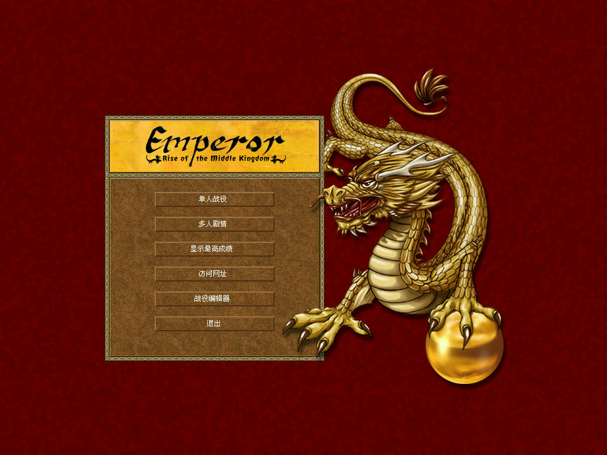
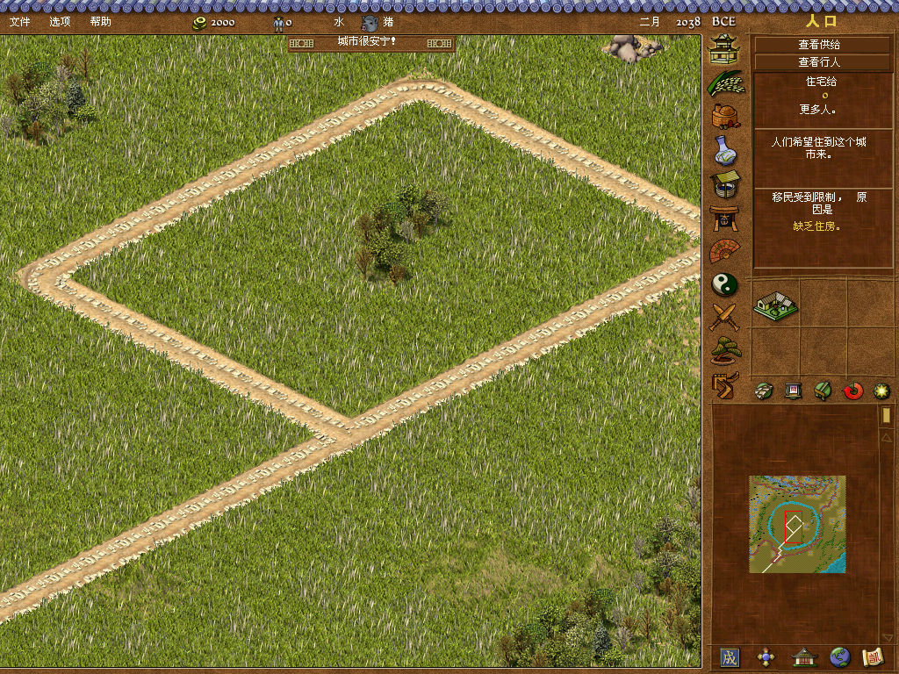

名稱：皇帝：中國的崛起／龍之崛起／模擬中國 (Emperor: Rise of the Middle Kingdom，簡中／英文版) 簡介：Sierra 2002年出品的城市建造模擬遊戲，由奧美電子簡中化並代理發行 [待補]。

保護：英文版為光碟SecuROM 4.77+序號（BAC9-RAL8-SAS2-SAX2-9999) 簡中版為光碟+序號（同上），破解碼： Emperor.exe 05 0F 85 80 03 -- -- -- 83 C4 08 85 C0 75 -- -- -- -- -- EB 備註：簡中版必須執行AutoRun.exe開始安裝，若直接執行Setup.exe會有錯誤。 備註：簡中版記得要安裝中文補丁，否則會沒有執行檔。 備註：簡中版不能在繁中系統上執行，會變成亂碼或缺字。 檔案：si_emperor_update_en_10_1010 = 英文版1.0.1更新檔 nocd_eng100.rar = 英文版1.0.0免光碟檔 nocd_eng101.rar = 英文版1.0.1免光碟檔 簡中修正檔.rar = 遊俠網所做的簡中版bug修正檔